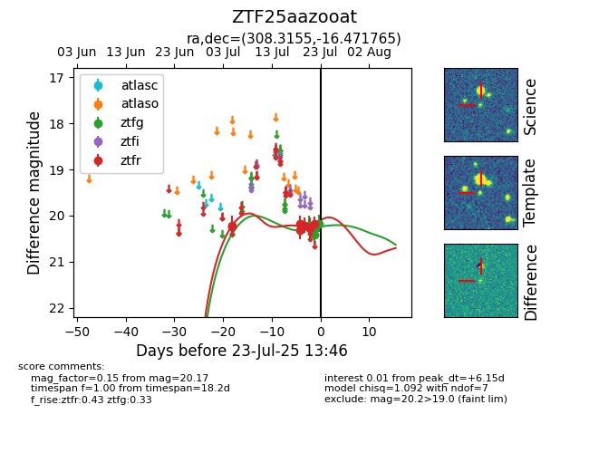

Target ZTF25aazooat at 2025-07-23 13:46, see:
FINK: fink-portal.org/ZTF25aazooat
Lasair: lasair-ztf.lsst.ac.uk/objects/ZTF25aazooat
ALeRCE: alerce.online/object/ZTF25aazooat
alt names
ZTF25aazooat (ztf,fink)
coordinates:
equatorial (ra, dec) = (308.3155,-16.47177)
galactic (l, b) = (28.6781,-29.74395)
photometry
last ztfg=20.17, ztfr=20.18
4 ztfg, 8 ztfr detections
